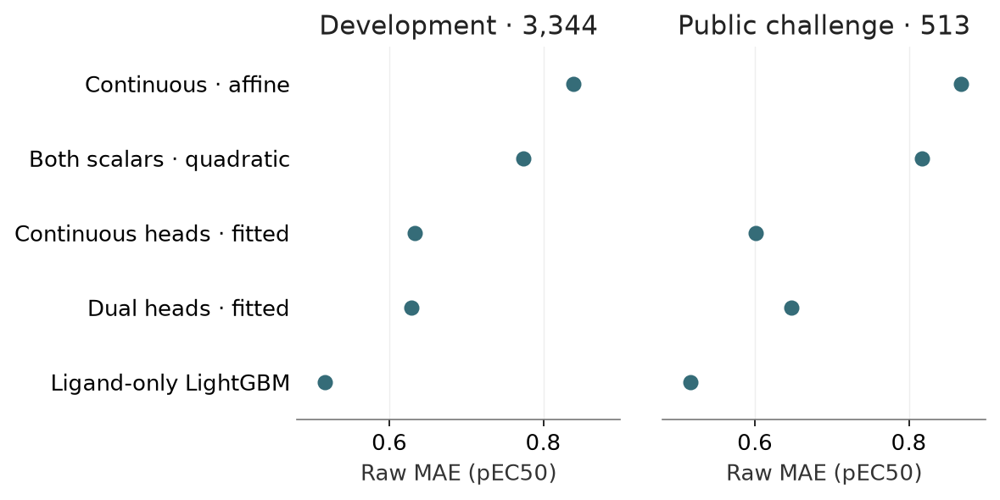

Binary readout correction and dual heads
Status: completed · Synthesis updated 2026-09-08. Original dates and immutable protocol history remain in the source evidence.
Question
Was evaluating only the continuous output an incomplete test of Nesso?

PNG · SVG · Plotted data · Figure provenance
{kind=link}
{kind=link}
Design and fitted/frozen flow
Frozen vectors → released continuous and binary branches → training-fitted linear/quadratic mapping, or both branches [fine-tuned] with bounded fusion.
Results
Combined quadratic calibration reaches raw development MAE 0.774; dual-branch adaptation 0.629 versus continuous-only 0.633. Dual-head challenge MAE worsens to 0.647 versus 0.601.
Implication and limits
Binder probability is not a cellular activity classifier. Potency thresholds are functional proxies, not binding labels; the small dual-head gain is not robust across cohorts.
All evidence is retrospective. Historical budgets, splits and raw versus uncertainty-weighted scores must remain distinct.
Source evidence
Original reports and exact tables (historical report links may refer to unbundled files).